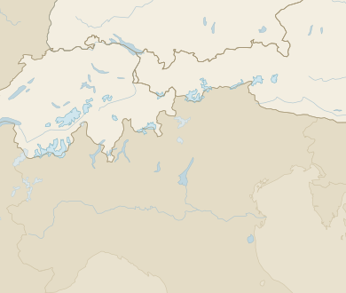

Gletscher
DACH · rund 2 200 im Atlas

Saison 2025/26 beendet
Sentinel-2 09.10.
{{sel.name}}
{{sel.cc}} · {{sel.value}}
Steckbrief
{{m.label}}
{{legendLine}}
{{badge}}
Schweiz · 2025/26
−5,5 %
Eisvolumen · −2,86 m w. e. · GLAMOS 01.10.
Österreich · 2024/25
−20,3 m
mittlere Länge · ÖAV 13.03.2026
Deutschland · 2025
26,2 ha
4 Gletscher · BAdW 19.03.2026
Rangliste
{{rankHint}}
{{r.rank}}
{{r.name}}
{{r.cc}} · Klasse {{r.cls}}
{{r.value}}
Was sich verändert hat
09.10.
Neuschnee bis ≈ 2 900 m, an 212 Gletschern Schneegrenze gemessen.
Satellit
01.10.
GLAMOS: −5,5 % Volumen; Bella Tola und Griessfiren verschwunden.
gemessen
18.09.
Pasterze: Oberfläche auf 2 500 m um 10 m gesunken.
gemessen
Karte: Natural Earth · Werte teils Mockup